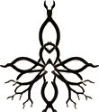

crest — OneLyf
Static engraved root-star. The home / ownership mark; complete with the AI off.

live — Liv
Same mark, junctions lit warm amber. The intelligence woven through the network.

essence
Reduced single-color mark for small / mono uses (favicon, tiny UI).